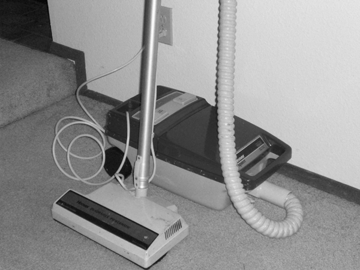

|  | Ideal: Let R be a ring. A subset I of
R is said to be an ideal of R if it's a subgroup of
R, and has the property that for every r in R, we
have rI ⊆ I and Ir ⊆ I. One way to recall the definition of an ideal is to remember that ideals "suck." If I is an ideal of ring R, then when any element of R is multiplied by any element of I, the resulting element must be in I; in a sense, the ideal uses multiplication to draw elements into itself. Granted, like our metaphor for an Invertible Function, this isn't a perfect explanation of the situation: if an element r of R is multiplied by an element of I, r itself does not become a member of I. However, this colorful description of I's role in R can be extremely pedagogically useful: people remember the concept, because they love saying that things "suck." Hence, the photograph.
|